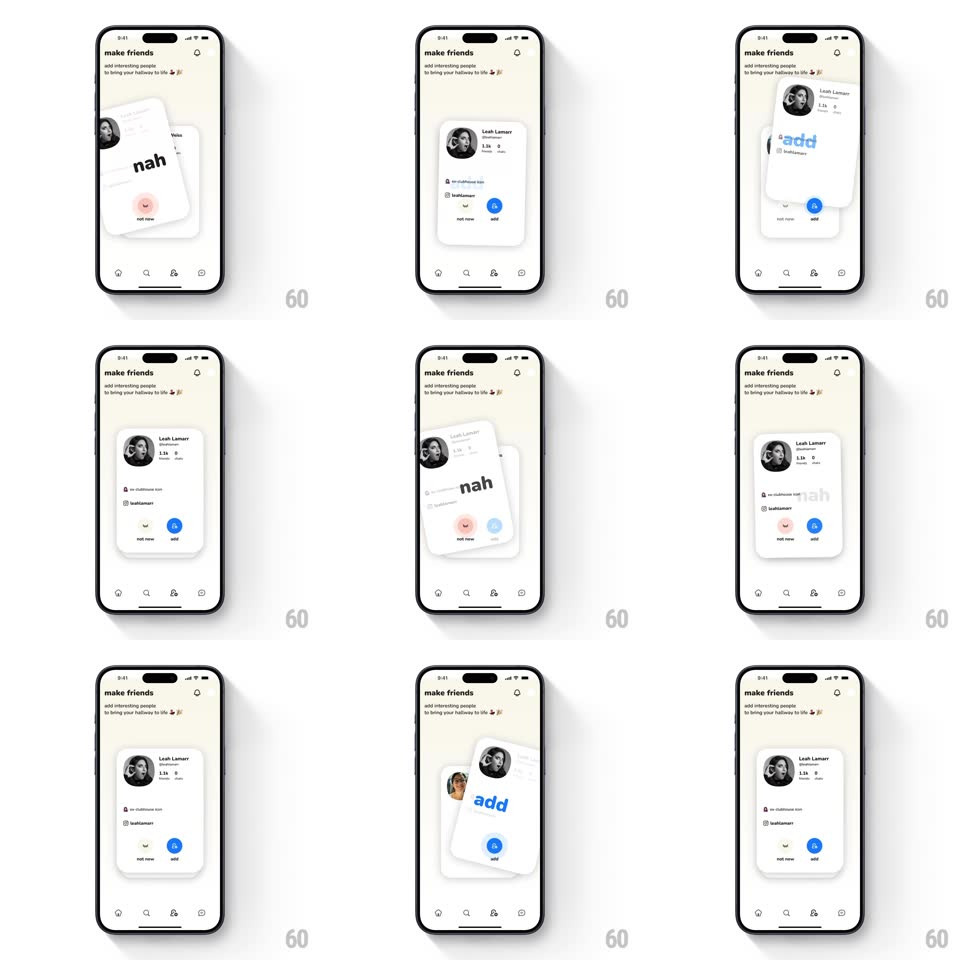

Media
Frame-by-frame

Rebuild this interaction 1:1: Clubhouse's "make friends" card stack - tapping the "not now" or "add" buttons sends the top profile card flying off with a springy rotation and a giant "nah" or "add" text stamp, revealing the next card underneath.

Rebuild this interaction 1:1: Clubhouse's "make friends" card stack - tapping the "not now" or "add" buttons sends the top profile card flying off with a springy rotation and a giant "nah" or "add" text stamp, revealing the next card underneath. ## Integration Integration: stack-agnostic spec - springs given as stiffness/damping, timed motions as duration + curve; map every value to your framework and animation library of choice. ## Scene Cream "make friends" screen (subtitle "add interesting people to bring your hallway to life"). Center: a stack of profile cards (photo, name, handle, club line) with two circular buttons below: "not now" (pink) and "add" (blue). Tab bar at the bottom. ## Motion spec Pattern: button-driven card swipe with verdict stamp. - Tap "not now": the card tilts and flies off to the left, rotating ~-20deg while translating past the screen edge (~400ms, ease-in); a bold "nah" stamp scales in on the card mid-flight (scale 0.5 -> 1.2 -> 1.0, spring ~320/16) and fades near the edge. - Tap "add": identical motion mirrored to the right with a blue "add" stamp. - Next card: starts slightly smaller and lower (~0.95 scale), springs up to full size and position (~380/20, ~400ms) as the top card leaves. - Stamps use heavy rounded type rotated with the card; they ride the card, not the screen. ## Calibration - The exit rotation continues past release - the card spins as it leaves, not a flat slide. - Stamp appears only after the card starts moving, as a verdict on the action. ## Reduced motion Card fades out sideways (200ms) with the stamp crossfading in place; next card fades up. ## Don't miss - Buttons are the trigger; the card flight mirrors a drag-flick but is fully choreographed. - The stamp text is oversized relative to the card - it should feel like a rubber-stamp verdict.